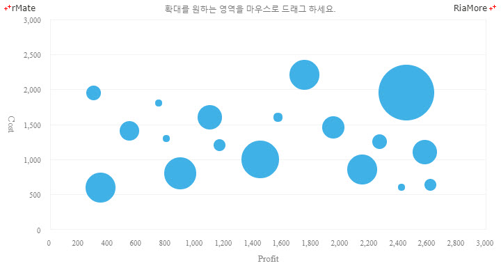
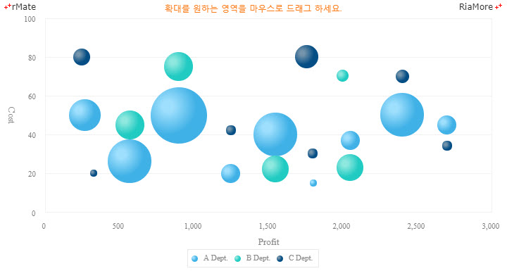
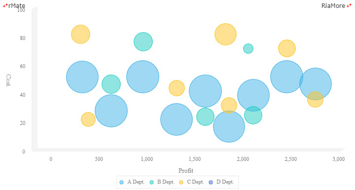

버블 차트
버블 차트는 데이터 포인트가 버블로 표시되고 추가적인 데이터 차원을 버블 크기로 나타내는 플롯(스캐터) 차트의 변형입니다.
플롯 차트와 마찬가지로 일반적으로 버블 차트는 카테고리 축을 사용하지 않고, 가로 축과 세로 축 모두 값으로 표현되는 축을 사용합니다.
버블 차트는 <Bubble2DChart> 노드의 series 속성값에 <Bubble2DSeries> 노드를 설정하여 생성할 수 있습니다.
버블의 크기는 버블의 최소 크기와 최대 크기에 기반하여 데이터 값의 상대적 비율에 따라서 자동으로 계산됩니다. 버블의 최소 크기와 최대 크기는 <Bubble2DChart> 노드의 minRadius 속성과 maxRadius 속성에 설정됩니다.
다음은 버블 차트를 생성하는 코드와 이를 적용해서 출력한 차트의 예제입니다.
<Bubble2DChart showDataTips="true" minRadius="5" maxRadius="40">
...
<series>
<Bubble2DSeries displayName="Profit/Cost/Revenue" xField="Profit" yField="Cost" radiusField="Revenue">
...
</Bubble2DSeries>
</series>
...
</Bubble2DChart>

See the CodePen 알메이트 차트 - 버블 차트
다중 시리즈 버블 차트
여러 개의 데이터 시리즈를 버블 차트에 적용할 수 있습니다. 다음은 A, B, C 부서 각각의 데이터 시리즈에 대한 Profit/Cost/Revenue 관계를 버블 차트로 표현하는 코드와이를 적용해서 출력한 차트의 예제입니다.
이 예제에서는 <Bubble2DSeries> 노드의 <fill> 속성에 <RadialGradient> 노드를 적용하여 버블에 방사형(Radial) 그라디언트 색을 칠하였습니다.
방사형(Radial) 그라디언트 색 설정에 관해서는 영역에 대한 방사형(Radial) 그라디언트 색 설정하기를 참조하십시요.
<Bubble2DChart maxRadius="40" minRadius="5" showDataTips="true">
...
<series>
<Bubble2DSeries displayName="A Dept." xField="A_Profit" yField="A_Cost" radiusField="A_Revenue">
...
</Bubble2DSeries>
<Bubble2DSeries displayName="B Dept." xField="B_Profit" yField="B_Cost" radiusField="B_Revenue">
...
</Bubble2DSeries>
<Bubble2DSeries displayName="C Dept." xField="C_Profit" yField="C_Cost" radiusField="C_Revenue">
...
</Bubble2DSeries>
</series>
...
</Bubble2DChart>

See the CodePen 알메이트 차트 - 다중 시리즈 버블 차트
3D 버블 차트
3D 형태의 X, Y 축을 적용한 3D 버블 차트를 생성할 수 있습니다.
3D 버블 차트는 <Bubble3DChart> 노드의 series 속성값에 <Bubble3DSeries> 노드를 설정하여 생성할 수 있습니다.
다음은 3D 버블 차트를 생성하는 코드와 이를 적용해서 출력한 차트의 예제입니다. 이 예제에서는 <Bubble3DSeries> 노드의 <fill> 속성에 <SolidColor> 노드를 적용하여 버블에 반 투명(alpha = “0.5”)한 색을 칠하였습니다.
색 설정에 관해서는 영역에 대한 색 설정하기를 참조하십시요.
<Bubble3DChart showDataTips="true" minRadius="5" maxRadius="40">
...
<series>
<Bubble3DSeries displayName="A Dept." xField="A_Profit" yField="A_Cost" radiusField="A_Revenue">
...
</Bubble3DSeries>
<Bubble3DSeries displayName="B Dept." xField="B_Profit" yField="B_Cost" radiusField="B_Revenue">
...
</Bubble3DSeries>
<Bubble3DSeries displayName="C Dept." xField="C_Profit" yField="C_Cost" radiusField="C_Revenue">
...
</Bubble3DSeries>
<Bubble3DSeries displayName="D Dept." xField="D_Profit" yField="D_Cost" radiusField="D_Revenue">
...
</Bubble3DSeries>
</series>
...
</Bubble3DChart>

See the CodePen 알메이트 차트 - 3D 버블 차트